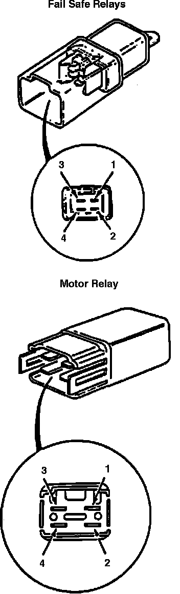

Brake Fluid Pump Relay: Testing and Inspection
Fig. 64 Failsafe/motor Relays:

1. Check for continuity between relay terminals 3 and 4, Fig. 64. Continuity should not be indicated.
2. Connect 12 volt battery across terminals 1 and 2. Continuity should be indicated between terminals 3 and 4. Replace relay as needed.